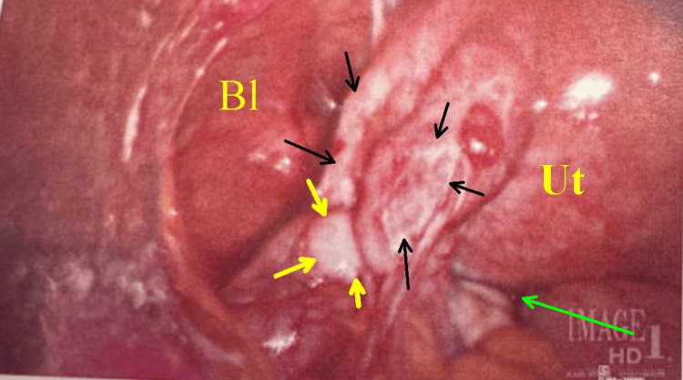
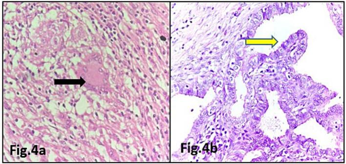
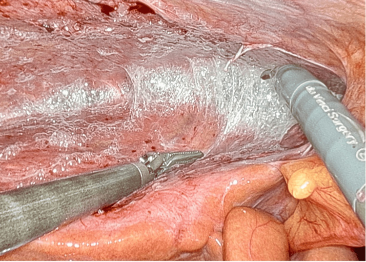

Воспалительные заболевания женских половых органов неспецифической этиологии
Анатомо-физиологические барьеры защиты женских половых путей
Половой тракт женщины открыт во внешнюю среду, и тем не менее инфекция доходит до матки далеко не всегда. Причина — последовательный ряд анатомических и биохимических препятствий, которые в сумме образуют барьерную защиту половых путей: систему структур, каждая из которых задерживает микроорганизмы на своём уровне и передаёт функцию следующей только при собственной несостоятельности. Представьте этот ряд как цепочку из четырёх звеньев, расположенных одно за другим — от наружного входа до полости матки.
Первое звено — сомкнутая половая щель. В норме большие и малые половые губы плотно прилегают друг к другу и механически перекрывают вход во влагалище. Условие состоятельности этого барьера — нормальный тонус промежности и целостность её мышц. Роды с разрывами, хирургические рассечения без последующего восстановления тонуса или возрастное опущение стенок влагалища нарушают смыкание; зияющая половая щель открывает прямой доступ к слизистой.
Второе звено — кислая среда влагалища, то есть поддержание pH влагалищного содержимого в диапазоне 3,8–4,5 за счёт молочной кислоты, которую продуцируют лактобациллы из гликогена слущенного эпителия. Кислая реакция губительна для большинства патогенов: они не способны размножаться при таком pH и гибнут ещё в просвете влагалища. Барьер состоятелен лишь пока нормальная микрофлора количественно преобладает над условно-патогенными видами. Антибиотики, оральные контрацептивы, применение внутриматочного контрацептива, гормональные нарушения, частая смена половых партнёров и снижение иммунитета нарушают этот баланс. При сдвиге pH в щелочную сторону лактобациллы вытесняются, и среда становится благоприятной для размножения анаэробов и других патогенов.
Третье звено — шеечная слизь, то есть секрет желёз цервикального канала, который в норме заполняет канал шейки матки в виде плотной пробки. Эта пробка сочетает два механизма: физический — вязкий гель затрудняет движение бактерий вверх — и химический — слизь содержит иммуноглобулины класса A, лизоцим и другие антибактериальные факторы. Состав и вязкость слизи меняются в зависимости от фазы цикла: в периовуляторный период она разжижается, что физиологически нужно для пропуска сперматозоидов, но одновременно снижает барьерные свойства. При цервицитах, эрозиях и после инструментальных вмешательств воспалённая слизистая цервикального канала перестаёт продуцировать нормальный секрет, и пробка исчезает.
Четвёртое звено — интактный внутренний зев, то есть внутреннее отверстие цервикального канала, которым шейка матки сообщается с её полостью. В норме зев сомкнут; его смыкание — не просто анатомическая узость, а активная мышечная функция перешейка. Именно через внутренний зев восходящий путь инфекции переходит с уровня шейки на уровень эндометрия. Менструация сопровождается его физиологическим приоткрыванием, и в эти дни микроорганизмы значительно легче проникают из влагалища в матку, вызывая восходящий воспалительный процесс. Роды, аборты, диагностические выскабливания и введение внутриматочных средств механически раскрывают зев и устраняют этот барьер на то время, пока канал остаётся проходимым.
Вот складывается вопрос: почему инфекция при поражении одного барьера не останавливается на следующем? Дело в том, что барьеры взаимозависимы. Нарушение микрофлоры влагалища меняет состав отделяемого, которое омывает шейку и разрушает её слизистую оболочку; цервицит, в свою очередь, лишает канал нормальной пробки — и путь к внутреннему зеву открыт.
Несостоятельность любого из четырёх барьеров создаёт условия для восходящего распространения инфекции: от влагалища к шейке, от шейки к эндометрию, далее — к маточным трубам, яичникам и брюшине. Воспалительные заболевания органов малого таза составляют 50–60 % всех заболеваний женских половых органов, и в большинстве случаев их морфологическим основанием служит именно этот — восходящий — путь, реализующийся там, где барьерная цепочка оказалась разорвана.
Анатомическая классификация неспецифических воспалительных заболеваний женских половых органов
Кажется, что воспаление половых органов — это что-то однородное: воспалилось, болит, лечим. На деле место воспаления решает всё: тактику, прогноз и вероятность того, что женщина сохранит фертильность. Именно поэтому анатомическая классификация — не учебная условность, а рабочий инструмент.
Граница, которая делит всю нозологию на два лагеря, проходит через внутренний зев шейки матки. Всё, что расположено ниже этой точки — влагалище, вульва, шейка снаружи, бартолиновы железы — образует нижний отдел половых путей (нижний отдел — это всё, до чего инфекция добирается первой, преодолевая барьерную защиту половых путей). Всё, что лежит выше внутреннего зева — матка, трубы, яичники, параметральная клетчатка, брюшина малого таза — составляет верхний отдел половых путей. Воспалительные заболевания верхнего отдела объединяют под аббревиатурой ВЗОМТ — воспалительные заболевания органов малого таза.
Если бы такого деления не было, пришлось бы каждый раз заново выяснять, стоит ли госпитализировать пациентку, нужен ли хирург и насколько серьёзен риск трубного бесплодия. Граница по внутреннему зеву даёт ответ сразу: поражения нижнего отдела, как правило, лечатся амбулаторно и проходят без следа; поражения верхнего отдела требуют активной тактики и оставляют риск необратимых последствий.
Посмотрите на классификацию в таблице ниже — она собирает обе группы вместе, чтобы было проще сравнивать.
| Нозология | Поражаемая структура | Ключевой признак |
|---|---|---|
| Нижний отдел половых путей | ||
| Вульвит | Слизистая малых половых губ, преддверие влагалища | Гиперемия, отёк, зуд наружных половых органов; без поражения влагалища |
| Бартолинит | Бартолинова железа и её проток | Болезненное уплотнение у основания малой половой губы; при абсцедировании — флюктуация |
| Вагинит (кольпит) | Слизистая влагалища | Патологические выделения, жжение; нарушение кислой среды влагалища |
| Цервицит | Слизистая шейки матки (экзо- и эндоцервикс) | Слизисто-гнойные выделения, контактная кровоточивость; нарушение шеечной слизи |
| Верхний отдел половых путей (ВЗОМТ) | ||
| Эндометрит | Слизистая и мышечная оболочка матки | Боль в нижних отделах живота, субфебрилитет, патологические маточные выделения |
| Сальпингоофорит | Маточные трубы и яичники | Боль латерализована соответственно стороне поражения; возможен двусторонний процесс |
| Параметрит | Параметральная клетчатка | Уплотнение и резкая болезненность в боковых сводах влагалища; высокая лихорадка |
| Пиосальпинкс | Маточная труба (полость заполнена гноем) | Тубоовариальное образование по УЗИ; труба превращается в замкнутый гнойный мешок |
| Пиовар | Яичник (гнойное расплавление ткани) | Объёмное образование с жидкостным содержимым на месте яичника; функция органа утрачена |
| Тубоовариальный абсцесс | Труба и яичник сливаются в единый гнойный конгломерат | Крупное неподвижное болезненное образование в малом тазу; хирургическое лечение обязательно |
| Пельвиоперитонит | Брюшина малого таза | Симптомы раздражения брюшины, высокая лихорадка, интоксикация; угроза генерализации |
Теперь разберём каждую нозологию словами — так, чтобы таблица была лишь удобным повтором, а не единственным источником.
Вульвит — воспаление наружных половых органов: слизистой малых половых губ и преддверия влагалища. Если процесс переходит на слизистую влагалища, говорят уже о вульвовагините. Воспалительные заболевания половых органов составляют около 65 % всех гинекологических заболеваний у девочек от 1 года до 8 лет. У взрослых он чаще вторичен — возникает на фоне выделений из вышележащих отделов или при раздражении кожи. Ключевые признаки: гиперемия, отёк, зуд и жжение наружных половых органов при интактном влагалище.
Бартолинит — воспаление бартолиновой железы, парного образования у основания малых половых губ, и её выводного протока. Когда проток закупоривается и гной не выходит наружу, формируется абсцесс бартолиновой железы: болезненное напряжённое выбухание с флюктуацией при надавливании. Это единственная нозология нижнего отдела, при которой нередко требуется хирургическое дренирование.
Вагинит, или кольпит — воспаление слизистой влагалища. Оба термина равнозначны: vaginitis — латынь, colpitis — греческий корень. Клинически — патологические выделения (бели), жжение, зуд; объективно — гиперемия стенок влагалища и нарушение нормальной кислой среды. Вагиниты — самая частая причина обращений: среди воспалительных заболеваний половых путей их доля составляет 50—60%.
Цервицит — воспаление шейки матки, захватывающее слизистую влагалищной части (экзоцервицит) и слизистую цервикального канала (эндоцервицит). В острой стадии — обильные слизисто-гнойные или гнойные выделения, зуд; реже тянущие боли внизу живота. Нарушение нормальной шеечной слизи при цервиците — это прямой путь для восходящей инфекции: барьер, который должен удерживать патоген ниже внутреннего зева, разрушается. Цервицит часто сочетается с кольпитом и сальпингоофоритом — эти нозологии нередко идут вместе.
Как только инфекция преодолевает внутренний зев, начинается зона ВЗОМТ. Здесь нозологии выстраиваются по нарастанию тяжести — как этажи одного здания, где каждый верхний хуже предыдущего.
Эндометрит — воспаление слизистой оболочки матки (эндометрия), нередко с вовлечением миометрия. Клинически: боль в нижних отделах живота, субфебрильная или высокая температура, патологические маточные выделения. При воспалительных заболеваниях органов малого таза Mycoplasma hominis обнаруживают в 40,6—76,5% случаев, при эндометритах — до 40%. Острый процесс при адекватном лечении заканчивается через 8—10 суток, однако хронизация эндометрита формирует почву для бесплодия и невынашивания.
Сальпингоофорит — воспаление маточных труб и яичников одновременно; изолированный сальпингит (воспаление только трубы) или изолированный оофорит (воспаление только яичника) встречаются редко, поскольку оба органа анатомически тесно связаны. Боль латерализована соответственно стороне поражения, но процесс бывает двусторонним. Лапароскопия — золотой стандарт диагностики. Осложнения сальпингоофорита — пиовар и тубоовариальный абсцесс — требуют хирургического лечения. По данным разных источников, частота бесплодия после перенесённых ВЗОМТ составляет 22—85%.
Параметрит — воспаление параметральной клетчатки, то есть рыхлой соединительной ткани, которая заполняет пространство вокруг матки и шейки. Это уже не слизистая и не труба — это клетчатка, пронизанная сосудами и нервами. Характерны резкая болезненность и плотный инфильтрат при исследовании боковых сводов влагалища, высокая лихорадка, интоксикация.
Пиосальпинкс — это маточная труба, превратившаяся в замкнутый гнойный мешок. Когда воспаление перекрывает оба конца трубы, гной накапливается внутри и просвет трубы растягивается. Орган при этом функционально мёртв. При ультразвуковом исследовании пиосальпинкс выглядит как вытянутое жидкостное образование рядом с маткой.
Пиовар — гнойное расплавление ткани яичника. По сути это абсцесс на месте того, что было яичником: нормальная ткань разрушена, функция утрачена. На УЗИ — округлое образование с неоднородным жидкостным содержимым там, где должен быть яичник.
Тубоовариальный абсцесс — следующий шаг: труба и яичник сливаются в единый гнойный конгломерат, разграниченный от окружающих тканей воспалительной капсулой. Пальпаторно — крупное болезненное неподвижное образование в малом тазу. Консервативная терапия на этом этапе почти всегда недостаточна: требуется хирургическое вмешательство.
Пельвиоперитонит — воспаление брюшины малого таза. Когда инфекция выходит за пределы органов и достигает серозного покрова, появляются симптомы раздражения брюшины: резкая боль при пальпации, напряжение мышц передней брюшной стенки, высокая лихорадка, выраженная интоксикация. Пельвиоперитонит — это уже граница между локальным и генерализованным процессом; без немедленного лечения он переходит в разлитой перитонит.
Клиническое значение деления на отделы сводится к трём правилам. Первое: поражения нижнего отдела лечат амбулаторно, местными и системными препаратами, без госпитализации. Второе: ВЗОМТ требуют госпитализации, системной антибактериальной, дезинтоксикационной и десенсибилизирующей терапии, а при формировании гнойных образований — хирургического вмешательства. Третье: именно ВЗОМТ определяют репродуктивный прогноз. Частота бесплодного брака в России составляет 15—17% и имеет тенденцию к росту — и воспалительные заболевания верхнего отдела остаются одной из главных его причин, поскольку разрушают трубу, нарушают нормальный транспорт яйцеклетки и создают условия для спаечного процесса.
Этиологическая структура неспецифических воспалительных процессов
Кажется, что воспаление — всегда результат встречи с чужеродным микробом, занесённым извне. На деле при неспецифических воспалительных заболеваниях женских половых органов главными виновниками оказываются бактерии, которые уже живут в организме. Их называют условно-патогенной флорой — то есть микроорганизмами, способными вызвать болезнь лишь при определённых условиях, но не при нормальной работе защитных механизмов. В отличие от специфических возбудителей — гонококка, хламидий, трихомонады — условно-патогенные микробы не несут в себе заранее заложенной агрессии: они годами существуют рядом с хозяином, не причиняя вреда, пока что-то не меняется.
Эти же бактерии, пока они ведут себя мирно, обозначают другим термином — комменсальная флора (commensal — «сотрапезник»). Это не два разных набора микробов, а один и тот же: перемена названия отражает перемену роли. Комменсал становится условно-патогенным агентом не потому, что изменился сам, а потому что изменилась среда вокруг него.
Среди возбудителей неспецифических воспалений редко действует один вид в одиночку. Значительно чаще речь идёт о полимикробной ассоциации — сочетании нескольких видов бактерий, которые усиливают патогенный потенциал друг друга. В 85–90 % случаев воспаление при ВЗОМТ имеет именно полимикробный характер. Это принципиально важно для лечения: антибиотик, направленный против одного участника ассоциации, оставляет остальных нетронутыми.
В структуре полимикробных ассоциаций выделяют две большие группы — аэробы и анаэробы. Посмотрите на Таблицу 1: она суммирует основные виды и их примерную долю при ВЗОМТ, и прямо после неё разберём, что из этого следует.
| Группа | Основные представители | Частота при ВЗОМТ |
|---|---|---|
| Аэробы (факультативные анаэробы) | Escherichia coli, энтерококки, стафилококки, стрептококки, Proteus spp., Klebsiella spp. | 40,6–76,5 % |
| Неспорообразующие анаэробы | Бактероиды (Bacteroides spp., прежде всего B. fragilis), пептострептококки, фузобактерии | до 40 % |
Как видно из таблицы, аэробы обнаруживаются при ВЗОМТ в 40,6–76,5 % случаев — разброс велик, потому что картина меняется в зависимости от локализации и остроты процесса. Среди аэробов первое место занимает Escherichia coli: кишечная палочка, привычная обитательница толстой кишки и промежности, легко колонизирует нижний отдел половых путей, а при нарушении барьерной защиты половых путей продвигается выше. Рядом с ней действуют энтерококки и стафилококки — постоянные соседи кожи и слизистых, — а также стрептококки, Proteus и Klebsiella, которые особенно значимы при гнойных формах — пиосальпинксе и тубоовариальном абсцессе.
Анаэробная группа выявляется примерно до 40 % случаев эндометритов и чаще всего представлена бактероидами. Неспорообразующие анаэробы — это бактерии, которые живут без кислорода и не образуют устойчивых спор: в отличие от клостридий они не выживают в почве годами, зато прекрасно чувствуют себя в глубоких тканях с низким содержанием кислорода — именно там, куда ведёт восходящая инфекция. Bacteroides fragilis вырабатывает ферменты, разрушающие окружающую ткань, и выживает в гнойных полостях, где аэробы уже погибли. Именно это сочетание — живучесть анаэробов там, где кончается кислород, плюс деструктивные ферменты — объясняет, почему присоединение анаэробного компонента резко утяжеляет течение сальпингоофорита или параметрита.
Теперь о том, что переводит комменсальную флору в патогенный режим. Сами по себе эти бактерии не меняются. Меняются условия: кислая среда влагалища ощелачивается, шеечная слизь разжижается или исчезает вовсе, механические барьеры нарушаются при инвазивных манипуляциях — выскабливании, введении внутриматочного контрацептива, родах. Снижение общего иммунитета — при сахарном диабете, анемии, длительном стрессе — убирает последний рубеж. Порог вирулентности условно-патогенной флоры остаётся постоянным; снижается не он, а сопротивляемость хозяина. Именно поэтому одна и та же E. coli у здоровой женщины не вызывает никаких симптомов, а у пациентки после аборта становится возбудителем эндометрита.
Таким образом, неспецифическое воспаление — это почти всегда полимикробный процесс с участием собственной флоры организма, переведённой в агрессивный режим нарушением местных и общих защитных механизмов. Понимание этого диктует тактику лечения: перекрыть пути распространения, восстановить барьеры и подобрать антибиотик с перекрытием обеих групп — аэробной и анаэробной.
Факторы риска развития и генерализации восходящей инфекции
Барьерная защита половых путей — это не одна стена, а несколько последовательных рубежей. Кислая среда влагалища, шеечная слизь, плотно сомкнутый внутренний зев — каждый из них задерживает микробы на своём уровне. Восходящий путь инфицирования — это движение возбудителей снизу вверх: из нижнего отдела половых путей через цервикальный канал в верхний отдел, вплоть до маточных труб и брюшины. Он реализуется именно тогда, когда хотя бы один барьер ослаблен или разрушен. Задача этого раздела — разобрать, какие именно обстоятельства это разрушение вызывают.
Начнём с физиологии. Кажется, что менструация — это процесс, при котором половые пути очищаются. На деле всё наоборот. Во время менструации внутренний зев приоткрывается, отслоившийся эндометрий лишает матку эпителиального покрова, а кровь нейтрализует кислую среду влагалища — то есть одновременно устраняются сразу три барьера. Условно-патогенная флора, которая в норме безвредно живёт во влагалище, получает прямой доступ к слизистой матки. Именно в первые дни менструального цикла регистрируется наибольшее число острых эндометритов и обострений хронического сальпингоофорита. Менструация — это физиологические, но повторяющиеся ежемесячно «ворота» для восходящего пути.
Роды и искусственное прерывание беременности действуют схожим образом, только повреждение глубже. При родах шейка матки травмируется, плацентарная площадка представляет собой обширную раневую поверхность, а полость матки временно сообщается с наружной средой. Искусственный аборт добавляет к этому инструментальное вхождение в полость матки, нередко в условиях уже существующего дисбаланса влагалищной флоры. Риск восходящей инфекции после инструментального вмешательства определяется не только самим фактом манипуляции, но и исходным состоянием микробиоценоза: если до аборта у женщины был цервицит или вагинит, вероятность развития эндометрита многократно возрастает.
Отдельного внимания заслуживает внутриматочный контрацептив (ВМК) — устройство, которое вводят в полость матки для предотвращения беременности. Нити ВМК, выходящие через цервикальный канал во влагалище, создают постоянный мостик между нижним и верхним отделами половых путей. Шеечная слизь при этом теряет герметичность: нить, как фитиль, проводит микробов в обход естественного барьера. Кроме того, сам контрацептив вызывает локальную воспалительную реакцию в эндометрии, снижая его устойчивость к инфекции. Представьте себе дверь, в замке которой постоянно торчит гибкая верёвка, — закрыть её полностью уже не получится. Именно поэтому наличие ВМК рассматривается как один из ведущих ятрогенных факторов риска ВЗОМТ.
Диагностические и лечебные манипуляции — гистероскопия, раздельное выскабливание, гистеросальпингография — объединяет одно: они нарушают целостность барьерных защитных механизмов и открывают путь патогенам в цервикальный канал. Риск невелик при адекватной подготовке пациентки, но резко возрастает при невыявленной инфекции нижнего отдела половых путей на момент вмешательства.
Дисбиоз влагалища — это нарушение нормального состава влагалищной микрофлоры, при котором количество лактобактерий снижается, а условно-патогенная флора, прежде всего неспорообразующие анаэробы, размножается бесконтрольно. Проще говоря: полезных «жильцов» становится меньше, а вредных — больше. Дисбиоз влагалища сам по себе не всегда вызывает выраженное воспаление, однако он устраняет кислую среду влагалища — тот самый первый барьер на пути восходящей инфекции. Полимикробная ассоциация, сложившаяся при дисбиозе, готова к продвижению вверх при первой возможности — например, при менструации или инструментальном вмешательстве.
Переохлаждение и хронический стресс действуют системно. Они подавляют клеточный иммунитет, снижают активность местных защитных факторов слизистых оболочек и нарушают гормональный фон. Последнее имеет прямое значение: эстрогены поддерживают нормальный эпителий влагалища и рост лактобактерий, а при гормональном дисбалансе эпителий истончается, создавая условия для инвазии микробов. Очаги хронической инфекции вне половой системы — например, инфекция брюшной полости — также могут служить источником бактериемии и гематогенного обсеменения органов малого таза.
Если проследить всю цепочку последовательно, картина выглядит так. Фоновый фактор — дисбиоз влагалища или переохлаждение — ослабляет первый барьер. Физиологическое или ятрогенное событие — менструация, роды, манипуляция, ВМК — разрушает следующий барьер, внутренний зев и шеечную слизь. Возбудители, преимущественно в виде полимикробных ассоциаций, получают доступ к эндометрию, трубам и, при дальнейшем распространении, к брюшине. Именно сочетание нескольких факторов риска, а не каждый из них в отдельности, определяет вероятность генерализации инфекции и перехода ВЗОМТ в тяжёлые формы — пиосальпинкс, пиовар, тубоовариальный абсцесс или пельвиоперитонит.
Воспаления нижнего отдела половых путей: вульвит, бартолинит, цервицит
Воспалительные заболевания наружных и внутренних половых органов служат причиной белей в 60–70% случаев — и большая их часть начинается именно здесь, в нижнем отделе половых путей. Вульвит, бартолинит и цервицит объединяет одно: они развиваются ниже внутреннего зева и, пока остаются в этих границах, не несут непосредственной угрозы для труб и яичников. Но стоит барьерной защите ослабнуть — и инфекция идёт выше.
Острый вульвит — воспаление кожи и слизистой вульвы. Клиническая картина складывается из жжения, зуда, болезненности при прикосновении и ходьбе. При осмотре: гиперемия, отёк, иногда мелкие эрозии и серозно-гнойное отделяемое. Лимфатические узлы паховой области нередко увеличены и болезненны. Само по себе воспаление вульвы редко бывает изолированным: чаще оно сочетается с кольпитом или бартолинитом, поскольку очаги соседствуют анатомически и обмениваются флорой.
Местное лечение острого вульвита — основа терапии: сидячие ванночки с растворами антисептиков, орошения, мазевые аппликации. Системные антибиотики добавляют при выраженной общей реакции или при идентификации возбудителя, требующего прицельного воздействия. Параллельно устраняют провоцирующие факторы — дисбиоз влагалища, эндокринные нарушения, нарушения гигиены.
Кажется, что бартолинит — это просто воспалённая железа, которое пройдёт само. На деле проток бартолиновой железы — трубка диаметром около двух миллиметров, и когда воспалительный отёк его перекрывает, секрет не находит выхода. Железа превращается в закрытый резервуар, внутри которого бактерии размножаются беспрепятственно. Так формируется абсцесс бартолиновой железы — полость, заполненная гноем и ограниченная пиогенной капсулой, — в отличие от ложного абсцесса, или кисты протока, где содержимое стерильно.
Клиника истинного абсцесса разворачивается быстро. Пациентки жалуются на нарастающую боль в области наружных половых органов, резко усиливающуюся при ходьбе. Температура поднимается до 38–39 °С и выше, появляются озноб, общая слабость, болезненность паховых лимфатических узлов. При осмотре — выраженный отёк и гиперемия в проекции железы, образование с флюктуацией в нижней трети большой половой губы. Представьте себе полость под давлением: капсула удерживает содержимое, но стенка её истончается, и без хирургического вмешательства абсцесс вскрывается самостоятельно — с высоким риском рецидива, потому что капсула при этом остаётся.
Показание к вскрытию — сформированная флюктуация. Операцию выполняют в условиях стационара: разрез делают по внутренней поверхности большой половой губы, эвакуируют гной, полость промывают антисептиком и дренируют. Оптимальный вариант — марсупиализация, то есть подшивание краёв капсулы к коже, что формирует новое устье протока и резко снижает частоту рецидивов. Одних антибиотиков при сформированном абсцессе недостаточно: через капсулу препарат практически не проникает в очаг.
Эндоцервицит — воспаление слизистой оболочки цервикального канала, то есть выстилки канала шейки матки изнутри. Острый эндоцервицит проявляется слизисто-гнойными выделениями из цервикального канала, тянущими болями внизу живота. При кольпоскопии: гиперемия вокруг наружного зева, контактная кровоточивость, отёчность слизистой. Шеечная слизь при этом теряет свои барьерные свойства: её вязкость снижается, pH сдвигается — и путь для восходящей инфекции открывается.
Именно поэтому принципы лечения острого эндоцервицита принципиально отличаются от подхода при вульвите. Лечение в острой фазе — системные антибиотики с учётом чувствительности возбудителя. Местная терапия при остром эндоцервиците противопоказана из-за риска распространения инфекции восходящим путём: любое орошение или введение препарата в канал шейки матки создаёт гидравлическое давление, способное протолкнуть возбудителей через внутренний зев в полость матки и далее. Это важный практический вывод: агрессивное местное воздействие, которое уместно при вульвите, здесь прямо вредит пациентке.
Главный вывод раздела таков: воспаления нижнего отдела половых путей требуют дифференцированной тактики — местная терапия эффективна при вульвите, обязательна операция при абсцессе бартолиновой железы и прямо противопоказана при остром эндоцервиците.
Острый эндометрит: клиника и верификация диагноза
Эндометрит — воспаление слизистой оболочки матки — кажется болезнью поверхностной: воспалилась выстилка и только. На деле всё устроено иначе. Слизистая матки состоит из двух слоёв с разной судьбой. Функциональный слой эндометрия — это верхняя часть, которая нарастает каждый цикл и отторгается с менструацией; он обновляется и в норме «сбрасывает» инфекцию вместе с кровью. Под ним лежит базальный слой эндометрия — постоянная основа, из которой и вырастает новый функциональный слой. Когда воспаление захватывает только функциональный слой, оно уходит вместе с ним при менструации. Острый эндометрит опасен именно тем, что инфекция прорывается в базальный слой: там нет «физиологической замены», и воспаление закрепляется.
Представьте дом, где верхний этаж сносят и отстраивают заново каждый месяц, а фундамент стоит неизменным. Пока пожар на верхнем этаже — его снесут и забудут. Пожар в фундаменте угрожает всей постройке. Именно так работает повреждение базального слоя при остром эндометрите.
Клиническая картина разворачивается быстро. Температура тела поднимается до 38–39 °C, пульс учащается, больная ощущает слабость и недомогание — это синдром интоксикации, отражающий системный ответ на воспаление в полости матки. Боль тупая, ноющая, локализуется внизу живота и нередко отдаёт в крестец. Выделения из половых путей становятся серозно-гнойными, иногда с примесью крови — их характер прямо отражает степень деструкции слизистой.
При бимануальном исследовании врач обнаруживает увеличенную матку с характерным признаком — пастозностью: это отёчность и тестоватая консистенция органа, возникающие из-за воспалительного отёка миометрия. Пальпация матки резко болезненна. Этот триад — увеличенная пастозная болезненная матка, серозно-гнойные выделения, синдром интоксикации — составляет клиническое ядро диагноза.
Верификация диагноза начинается с трансвагинального ультразвукового исследования (ТВ-УЗИ). Зонд, введённый влагалищно, находится в непосредственной близости от матки, что даёт разрешение, недостижимое при трансабдоминальном сканировании. На ТВ-УЗИ эндометрий неравномерно утолщён, контуры его нечёткие, в полости матки могут определяться газ или жидкостное содержимое. Толщина М-эха и эхогенность оцениваются в динамике — это позволяет следить за ответом на лечение, не прибегая к повторным инвазивным вмешательствам.
Морфологическое подтверждение даёт пайпель-биопсия эндометрия — аспирация небольшого столбика ткани тонкой гибкой канюлей (пайпелем) без расширения шейки матки и без наркоза. Если бы этого метода не существовало, единственной альтернативой оставалось бы выскабливание полости матки под анестезией — процедура значительно травматичнее и сопряжённая с риском перфорации воспалённой стенки. Пайпель позволяет получить материал амбулаторно: гистологически в препарате видна инфильтрация стромы нейтрофилами, отёк, полнокровие сосудов — то есть картина острого воспаления как функционального, так и базального слоя.
При адекватном лечении острый процесс заканчивается через 8–10 сут, однако у части пациенток воспаление переходит в хроническую форму. Именно поэтому морфологическая верификация принципиальна: клинического улучшения недостаточно, чтобы исключить персистирование воспаления в базальном слое.
Острый сальпингоофорит: формы, клиника, дифференциальная диагностика
Маточные трубы и яичник расположены вплотную друг к другу, поэтому воспаление трубы примерно у половины больных переходит и на яичник. Именно поэтому в клинической практике их объединяют в единый аднексальный комплекс, а воспаление обоих органов называют сальпингоофоритом, или аднекситом — от латинского adnexa, придатки матки. Изолированный сальпингит или изолированный оофорит встречается на старте болезни, но граница между ними стирается в первые же сутки: воспаление переходит с трубы на яичник по прямому контакту, и лечат их как одно заболевание.
Кажется, что воспаление придатков — это всегда «живот болит и температура». На деле картина существенно меняется в зависимости от глубины поражения, и три клинические формы аднексита отличаются настолько, что требуют разной тактики.
Катаральная форма сальпингоофорита — это поверхностное воспаление слизистой трубы без разрушения стенки и без гноя. Представьте себе отёкшую, покрасневшую слизистую, которая продуцирует избыток серозного секрета, но ещё не расплавляется. Именно так выглядит катаральная форма. Клинически она даёт тупые, ноющие боли внизу живота, субфебрилитет до 37,5 °C, умеренную болезненность придатков при пальпации. Общее состояние страдает мало: пациентка ходит сама, аппетит сохранён. Лейкоцитоз невысок, СОЭ ускорена незначительно. Именно потому что боль терпима, а температура «не очень высокая», многие откладывают визит к врачу — и катаральная форма незаметно переходит в следующую.
Гнойная форма сальпингоофорита — это уже расплавление тканей с накоплением гноя внутри трубы (пиосальпинкс) или яичника (пиовар). Боли становятся острыми, пульсирующими, температура поднимается до 38–39 °C и выше, появляются ознобы. При пальпации живота — выраженное мышечное напряжение в нижних отделах, симптомы раздражения брюшины. Придатки при влагалищном исследовании резко болезненны, пастозны, их контуры нечёткие. Лейкоцитоз достигает 15–20×10⁹/л со сдвигом влево, СРБ значительно повышен. Гнойный процесс требует немедленной госпитализации: если лечение начато адекватно, острый процесс заканчивается через 8–10 сут, однако промедление ведёт к следующей форме.
Когда гной прорывается через серозную оболочку трубы или яичника в полость малого таза, развивается пельвиоперитонит — воспаление брюшины малого таза. Пельвиоперитониту всегда сопутствуют сальпингоофорит или эндометрит, и это обусловливает образование обширного воспалительного конгломерата. Клиника резко ухудшается: боли распространяются по всему животу, появляется рвота, тахикардия, нарастает интоксикация. Живот вздут, напряжён, симптом Щёткина–Блюмберга положителен. Пельвиоперитонит — это хирургическая ситуация, и промедление с операцией грозит разлитым перитонитом.
Самая сложная задача при остром аднексите — не перепутать его с двумя другими острыми состояниями: острым аппендицитом и внематочной беременностью. Все три дают острую боль внизу живота, повышенную температуру и картину «острого живота». Посмотрите на таблицу ниже — она сводит ключевые различия вместе, а после неё разберём, почему они работают именно так.
| Признак | Острый сальпингоофорит | Острый аппендицит | Внематочная беременность (нарушенная) |
|---|---|---|---|
| Начало боли | Постепенное, нередко после менструации или переохлаждения | Постепенное; боль начинается околопупочно, затем смещается в правую подвздошную область (симптом Кохера) | Острое, внезапное, на фоне кажущегося здоровья |
| Локализация боли | Двусторонняя или с преобладанием справа/слева; над лоном | Правая подвздошная область; симптомы Ровсинга, Ситковского, Бартомье–Михельсона | Одностороннее — справа или слева; иррадиация в плечо и лопатку (диафрагмальный симптом) при гемоперитонеуме |
| Температура | Субфебрилитет → высокая лихорадка при гнойной форме | Субфебрилитет; высокая лихорадка — признак перфорации или гангрены | Нормальная или субфебрильная; высокая — редкость |
| Выделения из половых путей | Часто: слизисто-гнойные или гнойные | Нет | Тёмные скудные «мазня» — задержка или нарушение менструации |
| Тест на ХГЧ | Отрицательный | Отрицательный | Положительный |
| УЗИ малого таза | Утолщение стенок трубы, свободная жидкость в позадиматочном пространстве, гипоэхогенные образования при абсцессе | Свободная жидкость справа; утолщённый червеобразный отросток (>6 мм) при УЗИ брюшной полости | Плодное яйцо вне матки; свободная кровь в позадиматочном пространстве |
| Пункция заднего свода | Мутная жидкость или гной | Серозная жидкость или без содержимого | Тёмная несворачивающаяся кровь |
| Критический признак | Двустороннее поражение придатков, гнойные выделения, воспалительный анамнез | Симптом Кохера, правосторонняя локализация, нет гинекологического анамнеза | Положительный ХГЧ + свободная кровь = экстренная операция |
Как видно из таблицы, три состояния разводятся по нескольким осям сразу, и ни один признак в отдельности не решает вопрос. Разберём каждую пару сравнений.
Отличить аднексит от аппендицита сложнее всего тогда, когда воспалён правый придаток: боль справа, температура, мышечное напряжение — картина одна и та же. Ключевое различие — характер боли в начале: при аппендиците она начинается вокруг пупка и лишь через несколько часов смещается в правую подвздошную область (симптом Кохера), тогда как при аднексите боль сразу возникает над лоном или в подвздошной области. Второй ориентир — выделения из половых путей: при аппендиците их нет. Третий — двусторонность: придатки поражаются с обеих сторон гораздо чаще, чем аппендицит «переходит» влево.
Внематочная беременность опасна прежде всего тем, что её легко принять за аднексит при скудных жалобах. Здесь выручает один анализ: тест на хорионический гонадотропин (ХГЧ). При аднексите он отрицательный, при внематочной беременности — положительный всегда. Если тест положителен, а плодное яйцо в матке не видно на УЗИ, и при этом в позадиматочном пространстве есть свободная жидкость — это внематочная беременность до доказательства обратного. Пункция заднего свода влагалища даёт тёмную несворачивающуюся кровь, тогда как при аднексите из позадиматочного пространства получают мутную серозную жидкость или гной. Промедление с операцией при нарушенной внематочной беременности смертельно опасно — вот почему ХГЧ измеряют у каждой женщины репродуктивного возраста с острой болью внизу живота, независимо от анамнеза.
Пункция заднего свода — простой и быстрый способ понять, что именно скопилось в позадиматочном пространстве, если УЗИ недоступно или сомнительно. Кровь — думай об апоплексии яичника или внематочной беременности. Гной — думай об аднексите с пельвиоперитонитом. Серозная жидкость — картина менее специфична, но при правосторонней локализации и нет гинекологического анамнеза переключайся на аппендицит.
Женщины с воспалительными заболеваниями органов малого таза составляют 60–65% всех гинекологических больных, и острый сальпингоофорит — самая частая их форма. Это объясняет, почему дифференциальная диагностика с аппендицитом и внематочной беременностью — не академическое упражнение, а ежедневная задача приёмного покоя.
Гнойные тубоовариальные образования: пиосальпинкс, пиовар, тубоовариальный абсцесс
Гнойная форма сальпингоофорита не останавливается на воспалении слизистой трубы и стромы яичника. Если лечение запоздало или иммунный ответ оказался недостаточным, процесс идёт дальше — в полостях накапливается гной, а ткани начинают плавиться. Именно так складываются три нозологии, о которых пойдёт речь ниже.
Пиосальпинкс — это маточная труба, превратившаяся в замкнутый мешок с гноем. Механизм прост: воспаление сначала склеивает фимбриальный конец трубы, потом облитерирует перешеек, и полость оказывается запечатана с обеих сторон. Гной копится внутри, давление растёт, стенка трубы истончается. На УЗИ пиосальпинкс выглядит как вытянутое анэхогенное или гетерогенное образование с толстой гиперэхогенной стенкой и внутренними перегородками; диаметр трубы при этом нередко достигает 5–7 см, а её обычный просвет в норме едва различим. Клинически — пульсирующая боль в подвздошной области, температура 38–39 °C, болезненный инфильтрат при пальпации через свод влагалища.
Пиовар — гнойное расплавление ткани яичника с образованием полости внутри него. В отличие от трубы, яичник изначально не имеет просвета, поэтому нагноение начинается иначе: сначала бактерии проникают через разрыв фолликула или жёлтого тела, затем формируется микроабсцесс, который, сливаясь с соседними, превращает яичник в полость с гноем. На эхограмме яичник увеличен, его нормальная структура не прослеживается, внутри — неоднородное содержимое с хлопьями и перегородками, капсула утолщена. Клиника схожа с пиосальпинксом, но боль чаще локализована латеральнее, а пальпируемое образование более плотное и округлое.
Третий и наиболее тяжёлый вариант — тубоовариальный абсцесс: слияние пиосальпинкса и пиовара в единый конгломерат, окружённый общей пиогенной капсулой. Когда два очага воспаления лежат рядом, их разделяющая стенка некротизируется, полости сообщаются, и возникает единый резервуар с гноем. Капсула из фиброзной и грануляционной ткани отграничивает абсцесс от брюшной полости — но ненадёжно. При нарастании давления или истончении стенки содержимое прорывается, и гной попадает в свободную брюшную полость. Именно в этот момент возникает перитонеальный синдром — совокупность симптомов раздражения брюшины: резкое усиление боли, напряжение мышц передней брюшной стенки («доскообразный живот»), положительный симптом Щёткина–Блюмберга, тошнота, рвота, задержка газов и стула. Одновременно нарастают признаки выраженной интоксикации: температура поднимается выше 39 °C, пульс учащается несоразмерно ей, появляются ознобы, падает давление. Это уже хирургическая экстренность.
Посмотрите на компьютерную томограмму ниже — здесь хорошо видно, как выглядит тубоовариальный абсцесс изнутри.
На томограмме таза определяется многокамерное образование с плотной, чётко очерченной капсулой — именно она отделяет гнойную полость от петель кишечника и стенки малого таза. Внутри видны перегородки, разделяющие содержимое на камеры разного размера; плотность содержимого неоднородна, что отражает смесь гноя, детрита и пузырьков газа, образующегося при жизнедеятельности анаэробов. Капсула на КТ выглядит монолитной, но на операции она нередко оказывается хрупкой.
Разберём три нозологии рядом — это удобнее, чем держать их в голове по отдельности.
| Нозология | Механизм формирования | Эхографический признак | Клинический маркер |
|---|---|---|---|
| Пиосальпинкс | Облитерация обоих концов трубы → накопление гноя в просвете | Вытянутое анэхогенное / гетерогенное образование с толстой стенкой и перегородками, до 5–7 см | Пульсирующая боль в подвздошной области, болезненный инфильтрат через свод |
| Пиовар | Бактериальное проникновение через разрыв фолликула → слияние микроабсцессов внутри яичника | Увеличенный яичник без нормальной структуры, неоднородное содержимое с хлопьями, утолщённая капсула | Боль латеральнее, плотное округлое образование при пальпации |
| Тубоовариальный абсцесс | Некроз стенки между пиосальпинксом и пиоваром → слияние в единую полость с пиогенной капсулой | Многокамерный конгломерат с толстой капсулой, стирающий границу между трубой и яичником | Выраженная интоксикация, перитонеальный синдром при прорыве |
Как видно из этой таблицы, ключевое различие — в том, где именно образовалась полость. При пиосальпинксе она готова с самого начала: труба — полый орган, и гною есть куда копиться. При пиоваре полость приходится «пробивать» через сплошную ткань яичника, поэтому процесс идёт медленнее, а образование на УЗИ дольше выглядит солидным. Тубоовариальный абсцесс — это уже объединение двух источников, и именно он даёт самую тяжёлую клинику: чем больше суммарный объём гноя и чем тоньше капсула, тем выше риск прорыва и перитонита.
На операции картина красноречивая. Там, где в норме должны быть тонкая подвижная труба и небольшой яичник, хирург видит единый инфильтрат, спаянный с кишечником, сальником и стенкой таза.
На операционном поле — конгломерат из увеличенной, флюктуирующей трубы и яичника с напряжённой, гиперемированной капсулой. Нормальные анатомические границы между ними не определяются. Вокруг видны плотные спайки с петлями кишечника и задним листком широкой связки — именно они удерживают гной от прорыва в свободную брюшную полость, но они же делают разделение тканей технически сложным и кровоточивым.
При лапароскопии до прорыва абсцесса хирург видит напряжённый синюшно-красный конгломерат в области придатков, окружённый рыхлыми спайками с сальником и кишкой. Капсула блестит и пульсирует при малейшем прикосновении. Если прорыв уже произошёл, в малом тазу и по боковым каналам брюшной полости обнаруживается мутный гнойный выпот с характерным запахом, указывающим на участие неспорообразующих анаэробов. Главное, что следует запомнить: тубоовариальный абсцесс с перитонеальным синдромом — это абсолютное показание к экстренному хирургическому вмешательству, и никакая консервативная терапия его не заменит.
Пельвиоперитонит: классификация, клиника, формы распространения
Пельвиоперитонит — это воспаление брюшины малого таза. Он никогда не возникает сам по себе: ему всегда сопутствуют сальпингоофорит или эндометрит, и именно они служат источником инфекции, проникающей на брюшину. Понять логику классификации проще, если идти последовательно: сначала по характеру экссудата, затем по тому, остался ли процесс замкнутым или вышел за пределы малого таза.

По характеру экссудата различают два варианта. Серозно-фибринозный пельвиоперитонит — более ранняя и менее тяжёлая форма: в полости малого таза накапливается мутноватая жидкость с нитями фибрина, похожая на разбавленный белок яйца. Фибрин здесь играет защитную роль: он склеивает петли кишечника, большой сальник и соседние органы, отгораживая очаг от свободной брюшной полости. Гнойный пельвиоперитонит — следующий шаг: экссудат становится густым, непрозрачным, содержит нейтрофилы и разрушенные ткани. Именно эта форма часто ведёт к распространённому перитониту.
Кажется, что фибрин — нежелательный побочный продукт воспаления. На деле без него пришлось бы терять барьер, который единственный удерживает инфекцию в малом тазу. Спайки, которые формируются из фибриновых нитей, — неудобное последствие для фертильности, но в острый период они буквально спасают от генерализации процесса.
По форме распространения выделяют закрытую и открытую формы пельвиоперитонита. Закрытая форма пельвиоперитонита — это когда воспалительный экссудат отграничен спайками в пределах малого таза и не имеет сообщения со свободной брюшной полостью. Представьте плотно закрытую кастрюлю: содержимое кипит внутри, но пар не выходит. Открытая форма пельвиоперитонита означает, что отграничение нарушено: экссудат получает доступ к верхним этажам брюшины, и процесс грозит перейти в разлитой перитонит. Дополнительно по площади поражения различают частичный пельвиоперитонит, при котором воспаление охватывает лишь часть тазовой брюшины, и диффузный — когда вся брюшина малого таза вовлечена в процесс.
Клиническая картина разворачивается стремительно. Боль внизу живота острая, постоянная, усиливается при малейшем движении и при попытке изменить положение тела. Температура поднимается до 38–39 °C, нередко с ознобом. При осмотре живот напряжён в нижних отделах, там же определяются симптомы раздражения брюшины — симптом Щёткина–Блюмберга положителен. Гинекологическое исследование болезненно настолько, что смещение шейки матки «в любую сторону» вызывает резкую боль — так называемый симптом «толчка». Задний свод влагалища уплощён или выбухает из-за скопившегося экссудата. В крови — лейкоцитоз со сдвигом влево, повышение СОЭ и С-реактивного белка.
На лапароскопической картине малого таза при пельвиоперитоните видны мочевой пузырь, матка и правые придатки, покрытые фибринозным налётом. Серозная оболочка гиперемирована, матовая вместо обычной блестящей. Между органами — нити фибрина, склеивающие их в единый конгломерат. Именно эта картина показывает, как отграничение формируется визуально: свободного пространства между органами почти не остаётся.
При тяжёлом гнойном пельвиоперитоните к картине местного перитонита присоединяется паралитическая кишечная непроходимость — состояние, при котором кишечник перестаёт сокращаться не из-за механического препятствия, а из-за токсического и рефлекторного торможения перистальтики. Живот вздувается равномерно, газы не отходят, перистальтика при аускультации не определяется. На обзорной рентгенограмме брюшной полости в этом случае видны горизонтальные уровни жидкости с газовыми «шапками» над ними — так называемые чаши Клойбера. Этот рентгенологический признак указывает на тяжесть процесса и требует немедленного решения вопроса об оперативном лечении.
Ключевой вывод раздела: форма пельвиоперитонита — закрытая или открытая, серозно-фибринозная или гнойная — определяет объём неотложной помощи. Закрытая серозно-фибринозная форма допускает интенсивное консервативное лечение под наблюдением; открытая гнойная с признаками паралитической непроходимости — прямое показание к операции.
Лабораторная и инструментальная диагностика ВЗОМТ
Кажется, что поставить диагноз воспаления придатков несложно: пришла пациентка с болью и температурой — и всё понятно. На деле клиническая картина ВЗОМТ настолько вариабельна, что без лабораторных и инструментальных данных врач рискует и пропустить тяжёлый гнойный процесс, и, наоборот, прооперировать женщину без нужды. Именно поэтому диагностика строится как цепочка: сначала кровь, потом ультразвук, а лапароскоп — когда предыдущие шаги не дали ответа или ситуация ухудшается.
Первой точкой входа служит общий анализ крови. При ВЗОМТ в нём обнаруживают лейкоцитоз — обычно выше 10–11 × 10⁹/л — и сдвиг лейкоцитарной формулы влево (то есть в крови появляется больше молодых, незрелых форм нейтрофилов — палочкоядерных и юных клеток, которые костный мозг выбрасывает в ответ на острую инфекцию; в норме их доля минимальна). Ускорение СОЭ свыше 20 мм/ч дополняет картину. Отдельного внимания заслуживает СРБ — С-реактивный белок, острофазовый маркер, который печень синтезирует в ответ на воспаление; его концентрация растёт уже через 6–12 часов от начала процесса, и значение выше 20 мг/л принято считать диагностически значимым при подозрении на ВЗОМТ. Если бы этого маркера не было, пришлось бы ориентироваться только на лейкоцитоз — а он запаздывает и может оставаться нормальным при вялотекущем воспалении. СРБ реагирует быстрее и точнее отражает динамику: снижение концентрации на фоне лечения — надёжный знак ответа на антибиотики.
Инструментальная диагностика начинается с трансвагинального ультразвукового исследования (ТВ-УЗИ). Датчик вводят во влагалище, и расстояние до матки с придатками сокращается до нескольких миллиметров — примерно как разница между биноклем издали и лупой вплотную. На катаральной стадии сальпингоофорита ТВ-УЗИ нередко не показывает ничего специфического: трубы могут быть едва утолщены, свободная жидкость в малом тазу — минимальна. Зато при формировании пиосальпинкса, пиовара или тубоовариального абсцесса метод становится высокоинформативным: видно жидкостное образование с неоднородным содержимым и утолщёнными стенками, нередко с перегородками внутри. МРТ подключают тогда, когда УЗИ-картина неоднозначна, образование расположено нетипично или нужно точно разграничить гнойный очаг и опухоль яичника — МРТ даёт лучшее тканевое разрешение и позволяет оценить распространение процесса на параметрий.
Когда УЗИ обнаруживает свободную жидкость в позадиматочном пространстве или клиника указывает на скопление гноя в дугласовом кармане, прибегают к пункции заднего свода влагалища — прокол тонкой иглой задней части свода влагалища в направлении маточно-прямокишечного углубления. Технически: шейку матки фиксируют пулевыми щипцами, длинной иглой делают прокол строго по средней линии на 1–1,5 см ниже задней губы шейки и аспирируют содержимое. Прозрачная серозная жидкость — признак асептического воспаления или разрыва кисты. Мутная жидкость с хлопьями фибрина говорит о серозно-фибринозном пельвиоперитоните. Гной — прямое подтверждение гнойного пельвиоперитонита или вскрывшегося абсцесса; его немедленно отправляют на микробиологическое исследование с определением чувствительности к антибиотикам. Кровь в игле при пункции — сигнал другой катастрофы: внематочной беременности или апоплексии яичника, и тактика меняется полностью.
Наконец, диагностическая лапароскопия — прямой визуальный осмотр органов малого таза через небольшие проколы передней брюшной стенки с введением оптической системы — остаётся единственным методом, дающим морфологическую верификацию диагноза. Показания: неясный диагноз после всех предыдущих шагов, подозрение на тубоовариальный абсцесс, нарастание перитонеального синдрома, отсутствие эффекта от консервативного лечения в течение 48–72 часов. Критерии, по которым лапароскопически подтверждают ВЗОМТ: гиперемия и отёк маточных труб, наличие гнойного экссудата в просвете трубы или в малом тазу, спаечный процесс. При гнойной форме сальпингоофорита хирург видит трубу в виде колбасовидно раздутого, напряжённого, покрытого фибрином образования — и эта картина не оставляет сомнений. Диагностическая лапароскопия может переходить в лечебную: абсцесс вскрывают, санируют полость, разделяют спайки — всё в рамках одного вмешательства.
| Метод | Показание | Что выявляет | Ограничения |
|---|---|---|---|
| Лабораторные маркеры (лейкоцитоз, СОЭ, СРБ) | Любое подозрение на ВЗОМТ; мониторинг ответа на лечение | Лейкоцитоз >10–11 × 10⁹/л, сдвиг формулы влево, СОЭ >20 мм/ч, СРБ >20 мг/л | Неспецифичны; могут быть нормальными при вялотекущем процессе |
| ТВ-УЗИ | Первый инструментальный этап при любой форме ВЗОМТ | Жидкость в малом тазу, утолщение труб, пиосальпинкс, тубоовариальный абсцесс | Мало информативно при катаральной форме; зависит от опыта специалиста |
| МРТ малого таза | Неоднозначная УЗИ-картина; дифференциация абсцесса и опухоли | Распространение гнойного очага, вовлечение параметрия, структура образования | Дорого, недоступно в экстренной ситуации, требует времени |
| Пункция заднего свода влагалища | Свободная жидкость по УЗИ; подозрение на гнойный пельвиоперитонит | Характер выпота (серозный / фибринозный / гнойный / кровь); материал для посева | Не выполнима при облитерации заднего свода; не даёт визуальной картины |
| Диагностическая лапароскопия | Неясный диагноз; нет эффекта от лечения 48–72 ч; нарастание перитонита | Прямая визуализация воспаления труб, экссудата, абсцесса; возможна санация | Инвазивна; требует анестезии; противопоказана при разлитом перитоните |
Посмотрите на эту иерархию в таблице выше — и сразу видно главное: каждый метод занимает свою ступень, и ни один не заменяет другой. Лабораторные маркеры первыми указывают на воспаление, но не говорят, где именно и насколько глубоко. ТВ-УЗИ показывает анатомию, однако при начальных формах может быть безмолвным. МРТ даёт наилучшее разрешение, но это не экстренный инструмент. Пункция заднего свода — быстрый и малоинвазивный способ получить материал из очага, однако она слепа: врач не видит, откуда именно вытекает жидкость. Диагностическая лапароскопия — единственный метод, при котором диагноз становится морфологическим фактом, а не вероятностью. Именно поэтому при любых сомнениях или неэффективности антибактериальной терапии промедление с ней обходится дороже, чем сама процедура.
Стратегия диагностического порога и принципы консервативной терапии острых ВЗОМТ
Кажется, что выставлять диагноз ВЗОМТ нужно только при полной уверенности — иначе пациентка получит лишние антибиотики. На деле всё иначе. Промедление с лечением даже на несколько дней оборачивается переходом катарального процесса в гнойный, формированием пиосальпинкса или тубоовариального абсцесса и в итоге — необратимым трубным бесплодием. Именно поэтому в гинекологии принята концепция низкого диагностического порога — готовности начать лечение при минимальном наборе признаков, не дожидаясь абсолютного подтверждения диагноза.
Практически это означает следующее: если у женщины репродуктивного возраста есть болезненность при пальпации придатков матки, болезненность при смещении шейки матки и хотя бы один из лабораторных маркёров воспаления — лейкоцитоз, сдвиг лейкоцитарной формулы влево, повышение СРБ, — лечение начинают немедленно. Дожидаться результатов бактериологического посева или гистологии пайпель-биопсии для старта терапии не нужно: эти данные уточнят режим позже, но не должны его задерживать. Цена такого подхода — некоторая гипердиагностика: часть пациенток получит антибиотики при воспалении, которое на поверку окажется менее тяжёлым, чем предполагалось. Это приемлемый компромисс, потому что альтернатива — пропущенный восходящий процесс с последующей операцией — несравнимо хуже.
Острый процесс лечат в стационаре. Физический и психический покой — не ритуал, а условие, при котором венозный и лимфатический отток из малого таза не усиливается дополнительно. Постельный режим снижает внутрибрюшное давление и уменьшает механическое раздражение воспалённой брюшины, что особенно важно при серозно-фибринозном пельвиоперитоните. Положение с приподнятым головным концом кровати способствует ограничению экссудата в малом тазу. При адекватном лечении острый процесс заканчивается через 8—10 суток, однако у каждой четвёртой пациентки воспаление принимает затяжное течение.
Основу медикаментозного лечения составляет эмпирическая антибактериальная терапия — то есть терапия, начатая до получения результатов посева, на основании знания о наиболее вероятных возбудителях. Поскольку ВЗОМТ почти всегда вызываются полимикробной ассоциацией — аэробами, неспорообразующими анаэробами и нередко внутриклеточными микроорганизмами одновременно, — схема должна перекрывать весь этот спектр. Представьте сеть: если в ней есть хотя бы одна крупная ячейка, именно через неё уйдёт возбудитель, которого вы не накрыли. Поэтому препараты комбинируют: цефалоспорины или фторхинолоны против аэробной грамотрицательной флоры плюс метронидазол против анаэробов плюс при необходимости доксициклин или азитромицин против хламидий.
Режим введения антибиотиков строится по принципу ступенчатой антибактериальной терапии — последовательного перехода от парентерального пути к пероральному по мере стихания острых явлений. Логика здесь простая: парентеральный путь нужен не потому, что таблетки «слабее», а потому что при выраженном воспалении всасывание из желудочно-кишечного тракта ненадёжно — как нельзя рассчитывать на хороший кофе, заваренный в кипятке, если чайник едва тёплый. Первый этап — внутривенное или внутримышечное введение в течение 3—5 суток. Критерии перехода на пероральный приём: снижение температуры тела ниже 37,5 °C не менее суток подряд, отчётливое уменьшение болезненности при пальпации, снижение лейкоцитоза и СРБ. При их достижении пациентку переводят на таблетированные формы тех же или эквивалентных препаратов, и лечение продолжается до завершения полного курса — как правило, 14 суток суммарно.
Дезинтоксикационная терапия — введение жидкости внутривенно с целью разбавить и ускорить выведение бактериальных токсинов и продуктов тканевого распада из крови. Иначе говоря, это промывка организма изнутри: растворы глюкозы, физиологический раствор, реополиглюкин увеличивают объём циркулирующей жидкости и нагружают почки как фильтр. Объём и скорость инфузии рассчитывают по степени интоксикации, диурезу и гемодинамике. Параллельно назначают десенсибилизирующую терапию — введение препаратов, снижающих избыточную иммунную реактивность: антигистаминных средств (хлоропирамин, клемастин) и при необходимости глюкокортикоидов коротким курсом. Смысл в том, что при массивном воспалении иммунный ответ сам по себе повреждает ткани — высвобождение гистамина, брадикинина и других медиаторов усиливает отёк и болевой синдром. Десенсибилизирующие средства обрывают этот порочный круг.
На ультразвуковом исследовании малого таза расширенная маточная труба выглядит как извитая анэхогенная — то есть тёмная, заполненная жидкостью — трубчатая структура рядом с яичником. Стенки её утолщены и уплотнены. Именно так выглядит гидросальпинкс — труба, заполненная серозным содержимым; при нагноении содержимое становится неоднородным, с взвесью, и процесс переходит в пиосальпинкс. Посмотрите на контур трубы: если он прерывается или рядом определяется неоднородная масса, это уже признак тубоовариального абсцесса, и консервативная тактика уступает место хирургической.
МРТ таза даёт объёмную картину, недоступную УЗИ. На томограмме в двух проекциях крупные маточные трубы, заполненные гноем, видны как образования с гиперинтенсивным сигналом внутри — гной богат белком и отличается от серозной жидкости. Хорошо прослеживаются их взаимоотношения с маткой, мочевым пузырём и прямой кишкой, что критически важно перед операцией. Консервативную терапию продолжают до тех пор, пока нет признаков угрозы вскрытия абсцесса или нарастания перитонеального синдрома — именно МРТ позволяет оценить эти признаки точнее всего.
Главное, что следует вынести из этого раздела: низкий диагностический порог — не небрежность, а осознанная стратегия защиты репродуктивной функции. Начатая вовремя эмпирическая терапия широкого спектра с последующим ступенчатым переходом на пероральный приём, подкреплённая дезинтоксикационной и десенсибилизирующей поддержкой, позволяет в большинстве случаев остановить процесс до стадии необратимых гнойных осложнений.
Показания к хирургическому лечению и объём операции при гнойных ВЗОМТ
Кажется, что операция при воспалении — это крайняя мера, к которой прибегают лишь тогда, когда всё остальное уже испробовано и время работает на врача. На деле промедление с хирургическим лечением при гнойных формах ВЗОМТ меняет исход кардинально: капсула абсцесса разрывается, гной выходит в брюшную полость, и локальный процесс превращается в разлитой перитонит — ситуацию, из которой вывести пациентку несравнимо труднее.
Показания к хирургическому лечению ВЗОМТ — это клинические и инструментальные критерии, при наличии хотя бы одного из которых дальнейшее ведение только антибиотиками недопустимо. Абсолютными показаниями служат три ситуации. Первая — гнойные тубоовариальные образования: пиосальпинкс, пиовар и тубоовариальный абсцесс, когда полость с гноем уже сформирована и антибиотик не способен в неё проникнуть в достаточной концентрации — примерно так же, как таблетка от боли не достигает нарыва, закрытого плотной стенкой. Вторая — отсутствие эффекта от эмпирической антибактериальной терапии в течение 24–48 часов: нет снижения температуры, нет уменьшения лейкоцитоза, нет положительной динамики по СРБ. Третья — пельвиоперитонит с угрозой генерализации или угрозой разрыва гнойного образования: нарастание перитонеального синдрома, признаки открытой формы пельвиоперитонита, септическое состояние пациентки.
Логика принятия решения выстраивается последовательно. Сначала назначают эмпирическую антибактериальную терапию и оценивают ответ через 24–48 часов. Если динамика положительная — лечение продолжают; при адекватном ведении острый процесс разрешается в среднем за 8–10 суток, однако у части пациенток, особенно с уже сформированными гнойными образованиями, консервативный путь закрывается раньше. Если через 24–48 часов улучшения нет или состояние ухудшается — переходят к операции. Объём её определяют уже на этапе хирургического доступа, когда картина в брюшной полости становится видна напрямую.
Выбор доступа решает многое. Лапароскопия предпочтительна при отграниченном процессе, удовлетворительном общем состоянии, отсутствии выраженного спаечного процесса и небольших размерах гнойного образования: она даёт малую травму, быстрое восстановление и хороший обзор малого таза. Лапаротомия при ВЗОМТ — открытое чревосечение — показана при разлитом перитоните, подозрении на разрыв абсцесса, выраженном спаечном процессе III–IV степени, когда лапароскопический обзор технически невозможен, а также при нестабильной гемодинамике. Представьте себе замкнутую полость с тонкой стенкой под давлением: попытка работать в ней эндоскопом, не видя её границ, опаснее, чем открыть живот и осмотреть всё разом.
Объём операции зависит от двух факторов: распространённости гнойного процесса и возраста пациентки, то есть её репродуктивных перспектив. У молодых женщин стремятся сохранить матку и хотя бы один яичник — даже при одностороннем тубоовариальном абсцессе удаляют только поражённые придатки на стороне процесса, промывают брюшную полость и дренируют её. Если поражены оба придатка, но матка интактна, выполняют двустороннее удаление придатков с сохранением матки. У пациенток перименопаузального возраста или при тотальном поражении с вовлечением матки, при параметрите с некрозом тканей объём расширяют вплоть до надвлагалищной ампутации или экстирпации матки с придатками. Если же в ходе операции обнаруживают разлитой гнойный перитонит с паралитической кишечной непроходимостью, вмешательство дополняют тщательной санацией и дренированием брюшной полости — объём дренирования определяет хирург по интраоперационной картине.
Если бы чёткого временно́го критерия в 24–48 часов не существовало, клиницист оказывался бы перед субъективным выбором — ждать ещё сутки или уже оперировать. Именно этот ориентир переводит решение из области интуиции в область протокола и защищает пациентку от как избыточного, так и запоздалого вмешательства.
Патогенетические механизмы хронизации неспецифического воспаления
Острое воспаление, которое не разрешилось полностью, не просто «затихает» — оно перестраивает ткань так, что та сама начинает поддерживать воспалительный процесс. Цепочка этой перестройки разворачивается последовательно, шаг за шагом, и понять её удобнее именно в таком порядке: от первичного повреждения — к аутосенсибилизации, от неё — к инфильтрации, от инфильтрации — к расстройствам кровотока, и, наконец, к склерозу.

Первый шаг — аутосенсибилизация (от лат. auto — сам + sensibilisatio — повышение чувствительности): состояние, при котором иммунная система начинает реагировать на собственные изменённые белки ткани как на чужеродные. Кажется, что воспаление — это всегда ответ на микроб, и стоит микробу исчезнуть, воспаление прекратится. На деле при затяжном процессе погибающие клетки эндометрия, маточных труб или яичников высвобождают внутриклеточные белки, которые в норме скрыты от иммунного надзора. Иммунная система распознаёт их как антигены и формирует к ним сенсибилизацию. С этого момента воспаление может продолжаться без всякого возбудителя — асептически.
Второй шаг — тканевая реакция на эту сенсибилизацию. В очаге накапливаются лимфоциты и макрофаги-гистиоциты, формируя лимфогистиоцитарную инфильтрацию — плотные скопления этих клеток в строме органа. Представьте себе стену, которую возводят клетки вокруг очага: она должна его отграничить, но вместо этого сама становится источником постоянного раздражения. Среди инфильтрата появляются плазматические клетки, которые локально синтезируют иммуноглобулины класса G. Накопление IgG в ткани — морфологический маркер того, что процесс перешёл в хронический: острое воспаление такой картины не даёт.
На гистологическом срезе стенки маточной трубы при хроническом воспалении видна плотная инфильтрация собственной пластинки слизистой: тёмные ядра лимфоцитов и более крупные светлые гистиоциты образуют сплошной пласт. В центре препарата различима гранулёма с многоядерными гигантскими клетками — признак выраженной хронической реакции. Именно этот участок нужно искать в первую очередь: он подтверждает, что воспаление вышло за пределы острой фазы и приобрело черты аутоиммунного компонента.
Третий шаг — расстройство местного кровотока. Микроциркуляторные нарушения при ВЗОМТ — это совокупность изменений в мелких сосудах очага: спазм артериол сменяется их паретическим расширением, венулы переполняются и замедляют отток, капилляры пропитываются фибрином. Если бы этого не происходило, воспалительный экссудат выводился бы своевременно и ткань восстанавливалась. Но фибрин оседает на стенках сосудов и в межклеточном веществе, нарушает питание клеток и одновременно служит каркасом для разрастания соединительной ткани. Хроническая гипоксия, возникающая из-за замедленного кровотока, сама по себе поддерживает выброс провоспалительных медиаторов — и круг замыкается.
Четвёртый шаг — склероз. Фибробласты, активированные хроническим воспалением и гипоксией, замещают нормальную ткань коллагеном. В маточной трубе это означает облитерацию просвета и трубное бесплодие; в яичнике — фиброз стромы и нарушение овуляции; в параметрии — формирование плотных тяжей, которые смещают матку и сдавливают соседние органы.
Посмотрите на эту цепочку как на петлю с обратной связью, а не как на прямую линию. Склеротически изменённая ткань хуже кровоснабжается, хуже сопротивляется повторному инфицированию и легче вовлекается в аутоиммунную реакцию. Именно поэтому каждое обострение хронического сальпингоофорита разворачивается на фоне уже изменённой ткани и оставляет после себя ещё более глубокий морфологический след. Хроническое воспаление — это самоподдерживающийся процесс, разорвать который одной лишь антибактериальной терапией невозможно: она устраняет возбудителя, но не аутосенсибилизацию и не микроциркуляторный блок.
Отдалённые осложнения перенесённых ВЗОМТ
Кажется, что ВЗОМТ — это острый эпизод: прошли курс антибиотиков, воспаление стихло, и история закончилась. На деле острый процесс при адекватном лечении завершается через 8—10 суток, однако у каждой четвёртой женщины с острой формой ВЗОМТ развиваются отдалённые последствия, которые определяют репродуктивную судьбу на годы вперёд. Именно эти последствия — а не сама острая фаза — становятся главной ценой перенесённого воспаления.

Механизм большинства осложнений един: воспаление запускает фибринозное склеивание соседних поверхностей, фибрин организуется в соединительную ткань, и формируются сращения — спайки. Сначала они рыхлые и легко разделяются, но с каждым рецидивом или при хронизации процесса становятся плотнее. Маточные трубы оказываются в центре этого процесса: их слизистая покрыта складками, создающими большую контактную поверхность для фибрина, а просвет узкий — достаточно небольшого отёка, чтобы он закрылся. Воспаление сначала нарушает движение ресничек эпителия и перистальтику трубы, затем вызывает частичную или полную облитерацию просвета, и наконец труба оказывается впаяна в спайки, лишена нормальной подвижности и анатомически изолирована от яичника.
Трубно-перитонеальное бесплодие — то есть бесплодие, обусловленное нарушением проходимости и подвижности маточных труб вследствие спаечного процесса в малом тазу и брюшине, — является наиболее частым репродуктивным последствием ВЗОМТ. Если обе трубы непроходимы, оплодотворение в естественном цикле невозможно. Если труба проходима лишь частично, яйцеклетка может быть оплодотворена, но продвижение эмбриона замедлено или заблокировано — и он имплантируется в стенку трубы, а не в матку. Так возникает внематочная беременность — прямое следствие той же спаечной деформации.
На лапароскопической картине спайки между печенью и передней брюшной стенкой выглядят как натянутые параллельные тяжи — их называют спайками «струны скрипки». Представьте себе ту же картину в малом тазу, только вместо печени — труба и яичник, замурованные в паутину соединительнотканных тяжей: труба теряет подвижность, её фимбриальный конец не может захватить яйцеклетку, а сам орган зафиксирован в вынужденном положении. Именно это и называют перитонеальным фактором бесплодия.
Спаечный процесс не только блокирует трубы. Он становится самостоятельным источником боли. Синдром хронической тазовой боли — персистирующая боль в проекции малого таза продолжительностью более шести месяцев, не связанная напрямую с менструальным циклом, — во многом обусловлен именно спайками: они фиксируют органы, натягиваются при движении, растягивают брюшину, богато иннервированную болевыми рецепторами. Кроме того, в спайках формируются новые нервные волокна с повышенной чувствительностью, и болевой порог со временем снижается. Женщина годами лечится у разных специалистов, тогда как причина боли — рубцовые тяжи, оставшиеся от давно перенесённого аднексита.
Отдельного внимания заслуживают склеротические изменения яичников — уплотнение стромы и фиброз эпителия фолликулов вследствие воспалительного процесса в ткани яичника. Склерозированная строма хуже кровоснабжается, фолликулы созревают в условиях ишемии, и овуляция либо не происходит, либо формируется неполноценное жёлтое тело. Результат — ановуляторные циклы и относительная недостаточность прогестерона, что дополнительно снижает шансы на имплантацию даже при проходимых трубах. Те же склеротические изменения увеличивают механическую плотность капсулы яичника и создают условия для апоплексии — разрыва сосуда при овуляции становится труднее избежать, потому что истончённая стенка фолликула прорывается через уплотнённую ткань с большим усилием.
Если бы не было надёжного способа снизить частоту самих ВЗОМТ, всё вышеописанное пришлось бы лечить уже состоявшимся — бесплодие через ЭКО, тазовую боль через повторные лапароскопии, ановуляцию через стимуляцию. Такой способ есть: это комбинированные оральные контрацептивы. Помимо контрацептивного действия, у них существуют неконтрацептивные преимущества КОК — то есть лечебные и профилактические эффекты, не связанные с предотвращением беременности. Среди них — снижение частоты развития ВЗОМТ на 50%. Механизм понятен: КОК делают шеечную слизь гуще и менее проницаемой для восходящей инфекции, уменьшают объём менструального отделяемого (меньше среда для размножения бактерий) и снижают сократительную активность маточных труб, ограничивая распространение микроорганизмов вверх. Помимо этого, КОК снижают риск рака яичников на 45—50%, рака эндометрия на 50—60% и колоректального рака на 17%. Посмотрите на эти цифры в совокупности: препарат, который врач нередко назначает «просто от беременности», параллельно защищает сразу несколько органов и предотвращает то самое воспаление, последствия которого описаны выше.
Главный вывод раздела: перенесённые ВЗОМТ не заканчиваются вместе с острым эпизодом — их рубцовое наследие формирует трубно-перитонеальное бесплодие, хроническую тазовую боль и нарушение овуляции, а своевременная контрацепция КОК вдвое снижает вероятность самого воспаления и тем самым предотвращает эти осложнения.
Источники
- Гинекология в таблицах
- Гинекология. Айламазян 2013
- Гинекология. Радзинский, Фукс 2014
- Гинекология. Савельева, Бреусенко 2018 (4-е изд)
- Национальное руководство. Савельева, Кулаков, Манухин 2009
Иллюстрации
- Europe PMC, CC BY-NC, https://europepmc.org/article/PMC/PMC13399546
- Europe PMC, CC BY, https://europepmc.org/article/PMC/PMC13285132
- Europe PMC, CC BY, https://europepmc.org/article/PMC/PMC13006111
- Europe PMC, CC BY-NC-ND, https://europepmc.org/article/PMC/PMC13320390
- Europe PMC, CC BY-NC-ND, https://europepmc.org/article/PMC/PMC13320390
- Europe PMC, CC BY-NC-ND, https://europepmc.org/article/PMC/PMC13320390
- Europe PMC, CC BY, https://europepmc.org/article/PMC/PMC12175742